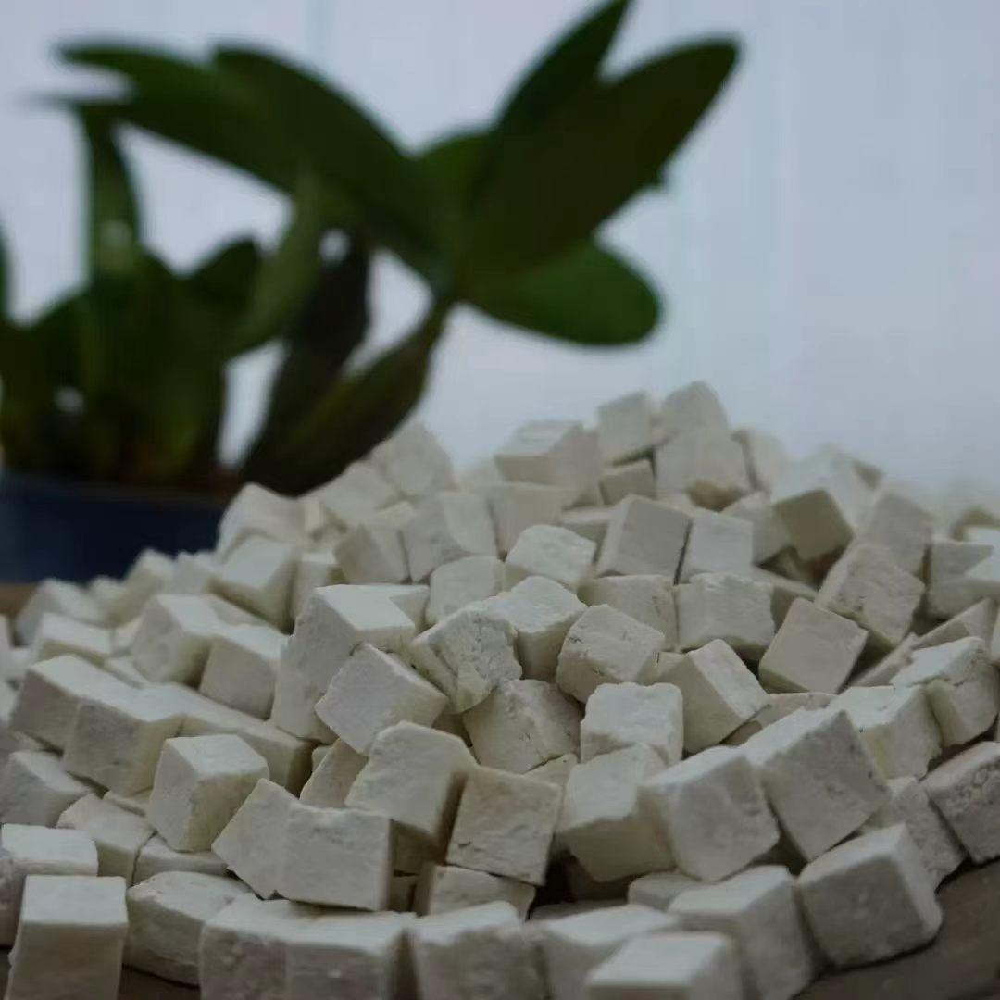

📦 原料基础信息
📛 品名
云茯苓（白苓丁）
药典正品🏷️ 拉丁名
Poria cocos (Schw.) Wolf
📅 生产批次
YL2025-0820
2025年秋采📍 道地产区
🗺️ 地理位置
云南省楚雄彝族自治州哀牢山高海拔松林区（海拔2000-2500米）
🤝 合作药农
楚雄哀牢山野生茯苓合作社（林地面积300亩）
🌲 生态环境
松林下腐殖土层深厚，年均温15℃，年降雨量1000mm

[ 产地实拍示意图：哀牢山松林茯苓采挖现场 ]⚙️ 采收与炮制流程
⏱️ 采收时间
2025年8月20日 – 9月10日
（立秋后，菌核成熟，淀粉含量高）
🔧 炮制步骤
- 去皮：鲜茯苓削去外皮（茯苓皮另作药用）
- 切丁：切成0.8-1cm立方块
- 蒸制：隔水蒸20分钟，去除草腥气
- 晾晒：自然日光晒3天至干脆
📆 炮制总天数
4天（不含鲜苓采后存放）
传统蒸晒 · 无硫🌿 康养功效 & 合香应用
💊 功效主治
利水渗湿，健脾，宁心安神。用于水肿尿少、痰饮眩悸、脾虚食少、便溏泄泻、心神不安、惊悸失眠。
🌸 合香配伍作用
作为臣药，平和湿气，增强运化，防止君药石斛滋腻碍胃。
📖 适用合香类型
祛湿安神香 · 健脾温香 · 安眠香囊
推荐用量：20-30%